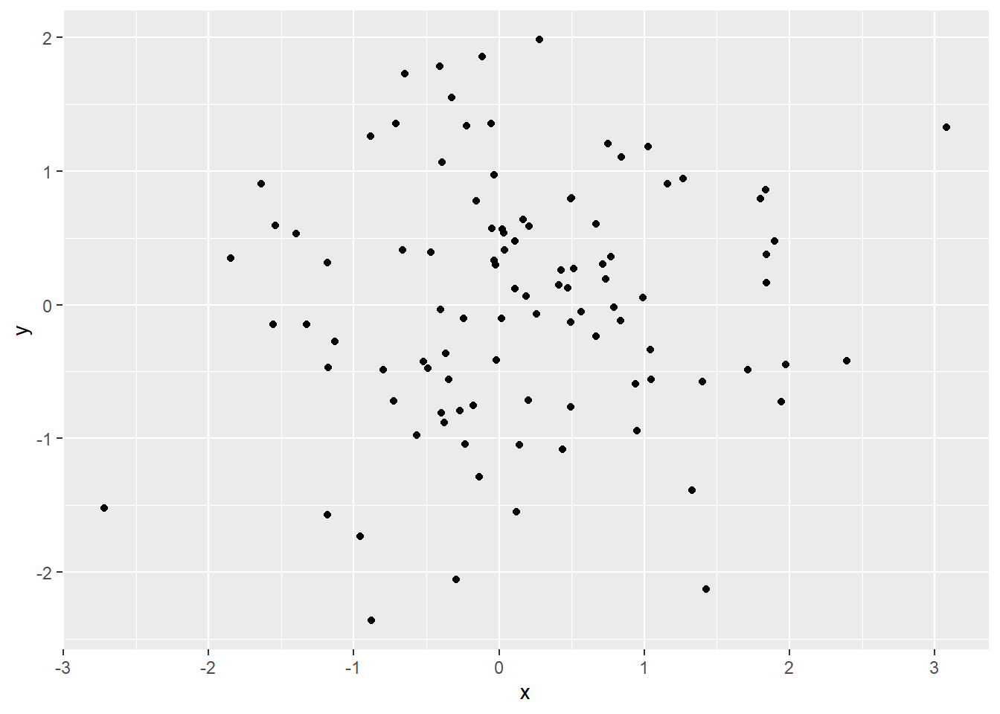

2 Mr. Sherlock Holmes
2.1 Expecting a visitor

Mr. Sherlock Holmes, who was usually very late in the mornings, save upon those not infrequent occasions when he was up all night, was seated at the breakfast table. I stood upon the hearth-rug and picked up the stick which our visitor had left behind him the night before. It was a fine, thick piece of wood, bulbous-headed, of the sort which is known as a “Penang lawyer.” Just under the head was a broad silver band nearly an inch across. “To James Mortimer, M.R.C.S., from his friends of the C.C.H.,” was engraved upon it, with the date “1884.” It was just such a stick as the old-fashioned family practitioner used to carry—dignified, solid, and reassuring.
2.2 Testing Watson
“Well, Watson, what do you make of it?”
Holmes was sitting with his back to me, and I had given him no sign of my occupation.
“How did you know what I was doing? I believe you have eyes in the back of your head.”
“I have, at least, a well-polished, silver-plated coffee-pot in front of me,” said he. “But, tell me, Watson, what do you make of our visitor’s stick? Since we have been so unfortunate as to miss him and have no notion of his errand, this accidental souvenir becomes of importance. Let me hear you reconstruct the man by an examination of it.”
“I think,” said I, following as far as I could the methods of my companion, “that Dr. Mortimer is a successful, elderly medical man, well-esteemed since those who know him give him this mark of their appreciation.”
“Good!” said Holmes. “Excellent!”
“I think also that the probability is in favour of his being a country practitioner who does a great deal of his visiting on foot.”
“Why so?”
“Because this stick, though originally a very handsome one has been so knocked about that I can hardly imagine a town practitioner carrying it. The thick-iron ferrule is worn down, so it is evident that he has done a great amount of walking with it.”
“Perfectly sound!” said Holmes.
“And then again, there is the ‘friends of the C.C.H.’ I should guess that to be the Something Hunt, the local hunt to whose members he has possibly given some surgical assistance, and which has made him a small presentation in return.”
“Really, Watson, you excel yourself,” said Holmes, pushing back his chair and lighting a cigarette. “I am bound to say that in all the accounts which you have been so good as to give of my own small achievements you have habitually underrated your own abilities. It may be that you are not yourself luminous, but you are a conductor of light. Some people without possessing genius have a remarkable power of stimulating it. I confess, my dear fellow, that I am very much in your debt.”
He had never said as much before, and I must admit that his words gave me keen pleasure, for I had often been piqued by his indifference to my admiration and to the attempts which I had made to give publicity to his methods. I was proud, too, to think that I had so far mastered his system as to apply it in a way which earned his approval. He now took the stick from my hands and examined it for a few minutes with his naked eyes. Then with an expression of interest he laid down his cigarette, and carrying the cane to the window, he looked over it again with a convex lens.
“Interesting, though elementary,” said he as he returned to his favourite corner of the settee. “There are certainly one or two indications upon the stick. It gives us the basis for several deductions.”
2.3 The real solution
MASS::Cars93 %>%
group_by(Manufacturer)%>%
summarize(med.mpg.city = median(MPG.city),
med.mpg.highway = median(MPG.highway)) %>%
arrange(desc(med.mpg.city)) %>%
knitr::kable()## `summarise()` ungrouping output (override with `.groups` argument)| Manufacturer | med.mpg.city | med.mpg.highway |
|---|---|---|
| Suzuki | 39.0 | 43.0 |
| Geo | 38.0 | 43.0 |
| Saturn | 28.0 | 38.0 |
| Mazda | 26.0 | 34.0 |
| Subaru | 25.0 | 30.0 |
| Eagle | 24.5 | 30.5 |
| Honda | 24.0 | 31.0 |
| Hyundai | 24.0 | 31.0 |
| Mitsubishi | 23.5 | 28.5 |
| Toyota | 23.5 | 30.5 |
| Plymouth | 23.0 | 30.0 |
| Nissan | 22.5 | 28.0 |
| BMW | 22.0 | 30.0 |
| Ford | 22.0 | 29.5 |
| Acura | 21.5 | 28.0 |
| Chrysler | 21.5 | 27.0 |
| Dodge | 21.5 | 27.0 |
| Mercury | 21.0 | 26.0 |
| Oldsmobile | 21.0 | 29.5 |
| Volvo | 20.5 | 28.0 |
| Chrylser | 20.0 | 28.0 |
| Saab | 20.0 | 26.0 |
| Audi | 19.5 | 26.0 |
| Mercedes-Benz | 19.5 | 27.0 |
| Volkswagen | 19.5 | 27.5 |
| Buick | 19.0 | 27.5 |
| Pontiac | 19.0 | 28.0 |
| Chevrolet | 18.5 | 27.0 |
| Lexus | 18.0 | 23.5 |
| Lincoln | 17.5 | 26.0 |
| Infiniti | 17.0 | 22.0 |
| Cadillac | 16.0 | 25.0 |
“Has anything escaped me?” I asked with some self-importance. “I trust that there is nothing of consequence which I have overlooked?”
“I am afraid, my dear Watson, that most of your conclusions were erroneous. When I said that you stimulated me I meant, to be frank, that in noting your fallacies I was occasionally guided towards the truth. Not that you are entirely wrong in this instance. The man is certainly a country practitioner. And he walks a good deal.”
“Then I was right.”
“To that extent.”
“But that was all.”
“No, no, my dear Watson, not all—by no means all. I would suggest, for example, that a presentation to a doctor is more likely to come from a hospital than from a hunt, and that when the initials ‘C.C.’ are placed before that hospital the words ‘Charing Cross’ very naturally suggest themselves.”
“You may be right.”
“The probability lies in that direction. And if we take this as a working hypothesis we have a fresh basis from which to start our construction of this unknown visitor.”
“Well, then, supposing that ‘C.C.H.’ does stand for ‘Charing Cross Hospital,’ what further inferences may we draw?”
“Do none suggest themselves? You know my methods. Apply them!”
“I can only think of the obvious conclusion that the man has practised in town before going to the country.”
“I think that we might venture a little farther than this. Look at it in this light. On what occasion would it be most probable that such a presentation would be made? When would his friends unite to give him a pledge of their good will? Obviously at the moment when Dr. Mortimer withdrew from the service of the hospital in order to start a practice for himself. We know there has been a presentation. We believe there has been a change from a town hospital to a country practice. Is it, then, stretching our inference too far to say that the presentation was on the occasion of the change?”
“It certainly seems probable.”
“Now, you will observe that he could not have been on the staff of the hospital, since only a man well-established in a London practice could hold such a position, and such a one would not drift into the country. What was he, then? If he was in the hospital and yet not on the staff he could only have been a house-surgeon or a house-physician—little more than a senior student. And he left five years ago—the date is on the stick. So your grave, middle-aged family practitioner vanishes into thin air, my dear Watson, and there emerges a young fellow under thirty, amiable, unambitious, absent-minded, and the possessor of a favourite dog, which I should describe roughly as being larger than a terrier and smaller than a mastiff.”